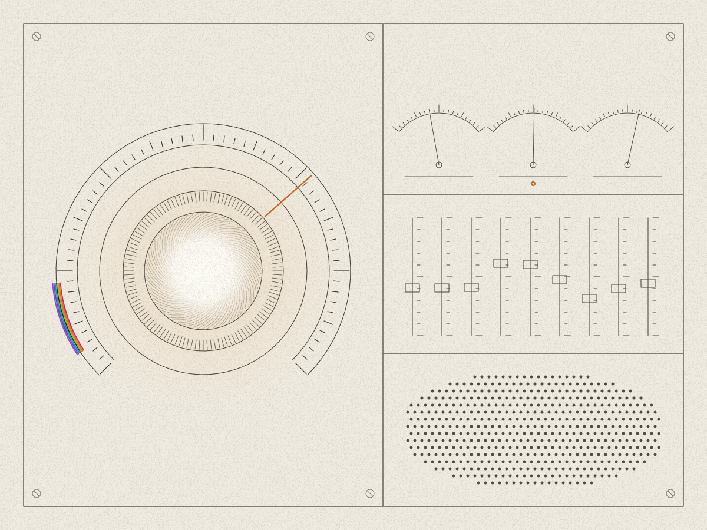
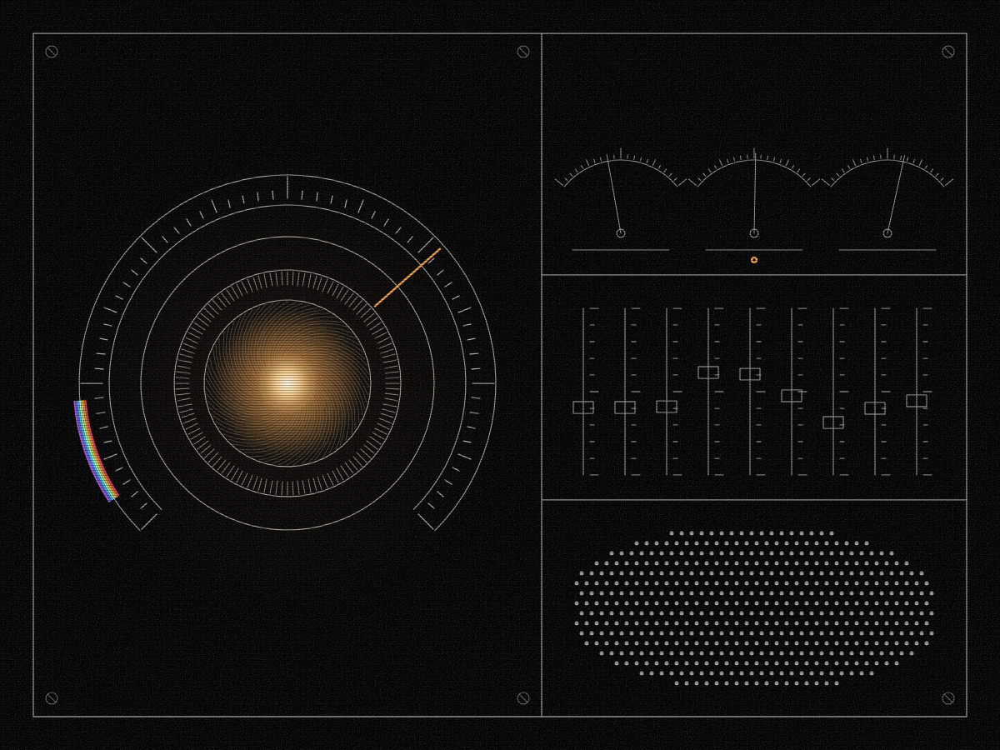

Zain Dana Harper


AI Evaluation and Test EngineerGraphics and Tools Programmer
Kent, Washingtonzaindharper@gmail.comharperz9.github.io
I build tests that tell a working AI system from a broken one, and renderers and compilers checked against a reference. Maintainers of 34 open-source projects have merged 41 of my pull requests, and my Skyrim lighting mod has 1,004,693 downloads. About thirteen years of programming, and eleven years of commercial tree care scoping jobs and coordinating crews.
Open to full-time and contract roles in AI evaluation and test engineering, graphics and developer tools, and technical support and QA.
Proof
- Open source: 41 pull requests merged in 34 other people's projects, counted November 14, 2026: 38 engineering changes in 31 repositories and 3 list entries. Of the engineering pull requests, 17 more were closed without merge and 13 are open. Examples: DeepEval #2822, Pydantic AI #6205, Datasette #2815, TOMLKit #549 and Biome #11518. harperz9.github.io/portfolio.html
- Shipped tools: Flywheel 1.9.0, Articulate 0.18.0, EMET 1.3.1, Accountable Surface 0.3.1, Calibrate Pro 2.0.1 and Build Color 1.0.2 on PyPI; BuildLang 1.15.0 on crates.io; CMMNS 3.10.0, Superframe 0.3.0 and Phantom 1.1.1 as GitHub releases. Versions read from the registries on November 14, 2026.
- Elder ENB: 1,004,693 total downloads, 179,218 unique downloads, 2,418 endorsements and 147,566 views on Nexus Mods as of November 13, 2026, at version final-elder-9. First uploaded April 21, 2024. nexusmods.com/skyrimspecialedition/mods/117327
- Published work: Who Knew First, an AI-assisted investigation of disclosure across nine reported AI-agent incidents; 30 research findings, 12 of them nulls, each with the steps to repeat it; and 13 research records with DOIs, the EMET systems paper among them: doi.org/10.5281/zenodo.21230267. Not peer reviewed. harperz9.github.io/findings/
- Measured results: a guard test caught 64 of 66 destructive tool calls from a steered agent on mocked tools. One accuracy comparison showed no measured gain, 9 of 10 against 8 of 10 with an interval that includes zero, and I retired that benchmark. harperz9.github.io/analytics/flywheel-benchmark-record.html
Resumes
Technical support, developer operations, and QA
Reproducible troubleshooting, accepted tests and documentation for Free Law Project, Hebbian Robotics, and Voxwire, software delivery, and customer communication.
AI evaluation and test engineering
Accepted fixes in DeepEval, Pydantic AI, and Datasette, then Flywheel, release checks scored against planted faults, and a guard test for steered agents. A graphics and tools variant covers renderers, shader presets, and BuildLang.
Arboriculture, field operations, and estimating
Eleven years of ground-based tree-care operations, site assessment, estimates, scheduling, client education, and safety coordination. A public-operations variant is also available.
Background
Eleven years in commercial tree care, April 2015 to June 2026: site assessments, estimates, crew and vendor coordination, and ground safety around rigging. Before that, Xbox networking support by phone and chat, 2014 to 2015. I have not yet held a paid software role. The software on this site is independent work, done as a sole proprietor since September 2026 and on my own time before that.
Full CV and portfolio
The full CV retains the expanded record separately from the one-page resumes. It leads with selected results, then covers security evaluation, AI evaluation, graphics and rendering, developer tools, technical writing, and independent research.
Research and contribution record
Thirteen independent research records include EMET and other DOI-indexed papers and manuscripts. These records are not peer reviewed. The contribution record distinguishes merged, open, and closed without merge outcomes.
Credentials
42 credentials from 2026, each listed with its verification result: Qualys Certified Specialist in six exams, four Microsoft Applied Skills credentials, Google skill badges including Google DeepMind: Train A Small Language Model, and 17 Linux Foundation course certificates. Coursework topics describe training separately from employment experience.
Full credential inventory · Provider links and completion evidence · Standards and frameworks reference index
AI accountability and public-interest writing
Builds inspectable AI tools and publishes independent analysis of incident disclosure, evaluator independence, human consequences, and evidence limits.
Who Knew First: incident disclosure and evaluator conflicts. An Open Letter on Checking the Machines: contestable AI decisions and accountable responses. Borrowed Ground: human interdependence, responsibility, and limits on technical authority.
Relevant to public-interest and whistleblower-protection work.
Using the files
Use the employer's requested format: PDF for layout, DOCX for editing, plain text for forms. Check information filled in automatically after upload.